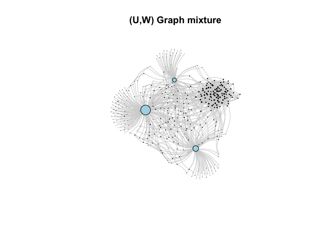
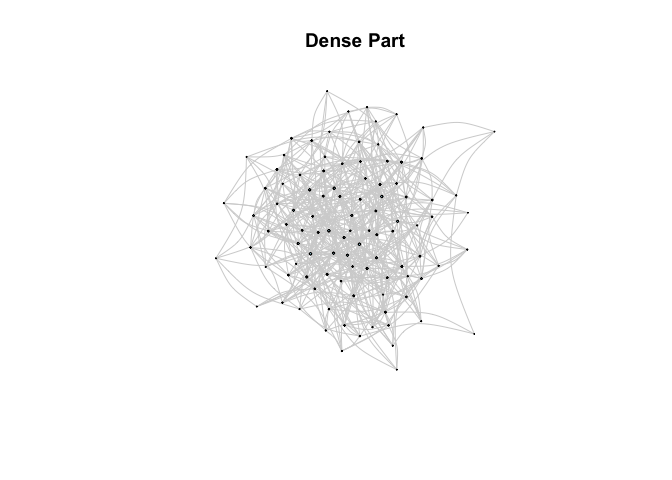
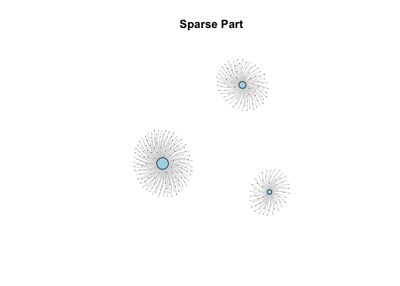

The goal of graphonmix is to generate -mixture graphs. These graphs are generated from a standard dense graphon and a disjoint clique graphons , which acts as the sparse graphon.
Installation
You can install the development version of graphonmix from GitHub with:
# install.packages("pak")
pak::pak("sevvandi/graphonmix")Example
This is a basic example on how to sample a -mixture graph.
library(graphonmix)
library(igraph)
#>
#> Attaching package: 'igraph'
#> The following objects are masked from 'package:stats':
#>
#> decompose, spectrum
#> The following object is masked from 'package:base':
#>
#> union
# create the dense graphon W(x,y) = 0.1
W <- matrix(0.1, nrow = 100, ncol = 100)
# create the sparse part - a disjoint set of stars
wts <- c(0.5, 0.3, 0.2)
# single function to generate a graph mixture
gr1 <- sample_mixed_graph(W, wts, nd = 100, ns = 300, p = 0.5, option = 2)
plot(gr1,
edge.curved = 0.3,
vertex.size = degree(gr1)*0.1,
edge.color = "lightgray", # Light colored edges
vertex.label = NA,
vertex.color = "lightblue",
main = "(U,W) Graph mixture"
)
Or you can generate the two graphs separately and join them.
# sample the dense part and plot
grdense <- sample_graphon(W, 100)
plot(grdense,
edge.curved = 0.3,
vertex.size = degree(grdense)*0.1,
edge.color = "lightgray", # Light colored edges
vertex.label = NA,
vertex.color = "lightblue",
main = "Dense Part"
)
# sample the sparse part and plot
grsparse <- generate_star_union(wts, 300)
plot(grsparse,
edge.curved = 0.3,
vertex.size = degree(grsparse)*0.1,
edge.color = "lightgray", # Light colored edges
vertex.label = NA,
vertex.color = "lightblue",
main = "Sparse Part"
)
# join the two graphs and plot
gr2 <- graph_join(grdense, grsparse, option = 2)
plot(gr2,
edge.curved = 0.3,
vertex.size = degree(gr2)*0.1,
edge.color = "lightgray", # Light colored edges
vertex.label = NA,
vertex.color = "lightblue",
main = "(U,W) Graph mixture"
)